AI/ES/25/ws/3/How Clay Performs Agent Evaluation
- Published page
How Clay Performs Agent Evaluation
- meta info
- Date: February 22, 2025
- Time: 2:30 PM - 3:50 PM
- Presenters: Person/Nick Huang and Person/Ratch Sujithan
- Room: AWS JFK27 (12 W 39th St) 300/301 - entrance 39th St & 5th Ave, large gold doors, bring ID
- Description: In this workshop, Nick Huang from #LangChain will explain agent evaluation concepts. Person/Jeff Barg or Person/Ratch Sujithan
will then demonstrate how Clay performs end-to-end agent tests for Claygent across various prompt categories against a ground truth dataset, and discuss how Clay conducts prompt-level evaluations.
intro to evals - Person/Nick Huang from LangChain
Intro slide - 01
Intro to chain vs agent and issues that lead to evals
- My Notes
chain vs agent
- agents typically use AI/Tool/Calling
issues with agents
mitigations
- My Notes
how can we be sure that our performance is getting better over time?
test versions of your application against full datasets of examples - 02
Pics
AI Notes
how to define evaluators to calculate useful metrics from your experiments - 03
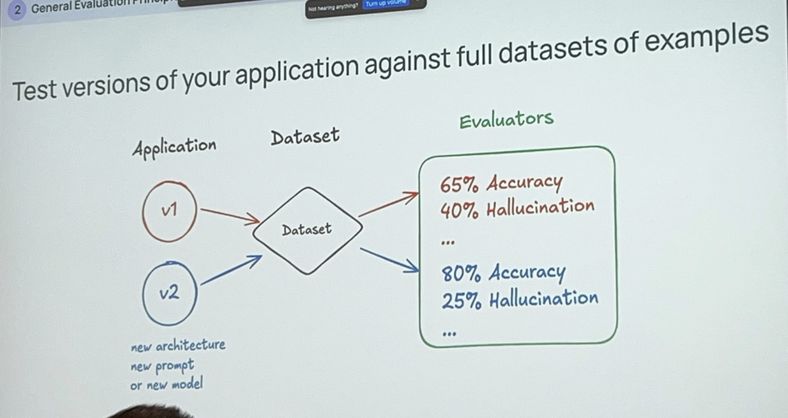
AI Notes
Define evaluators to calculate useful metrics from your experiments - 04
Pairwise evaluators directly compare different versions of your application - Pic 05
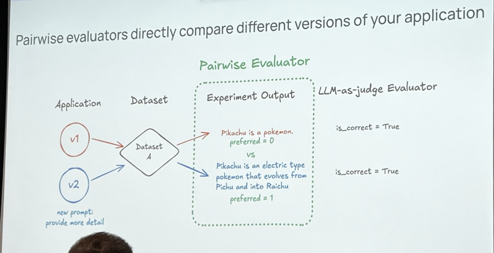
AI Notes
Performing experiments as you iterate on your application is crucial Pic 06
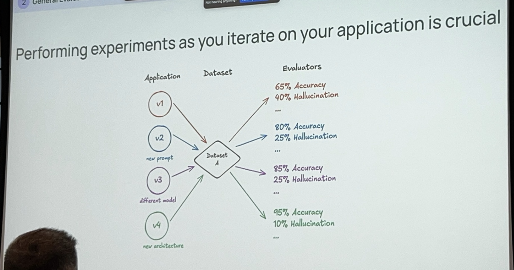
AI Notes
Feedback from "online" evaluators can help you set up useful automations Pic 07
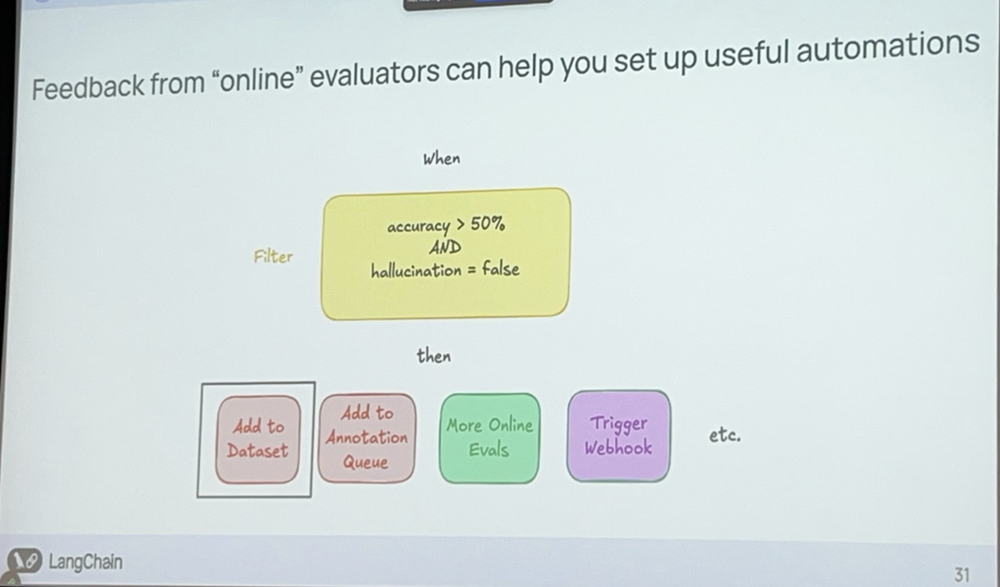
AI Notes
Agents need to be evaluated at different levels of granularity Pic 08
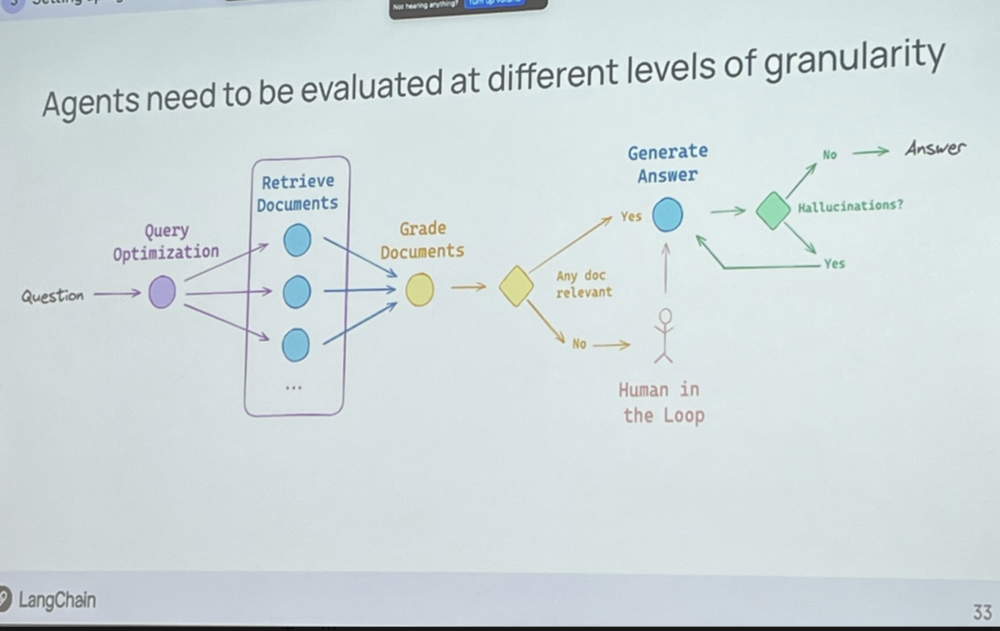
AI Notes
Expected trajectory can be ordered Pic 09
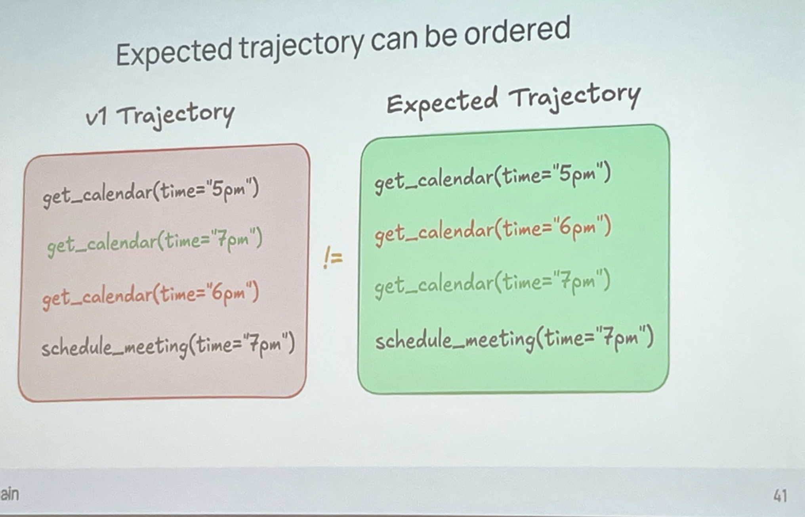
AI Notes
Multi-turn conversations can be tested individually, or in series Pic 10
Regression Testing: Does performance actually improve with a change? Pic 11
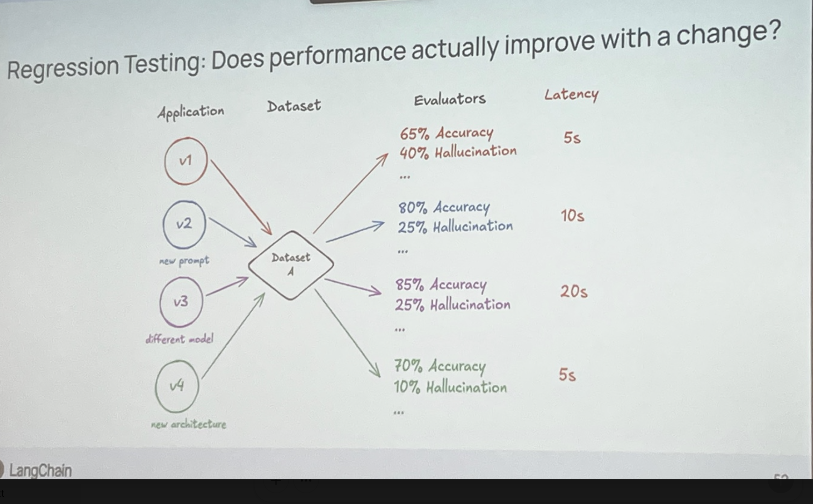
My Notes
- Insight/Key here was that we can test different versions of the application against the same version of the dataset with the same evaluator
AI Notes
Person/Ratch Sujithan from ClayCo
Clay
- "data marketplace for go to markplace"
- external providers - ocean.io
- they are going to focus on "claygent" an agent reserach interface
- go to clay.com and see what they have to offer
- trusted by 300k gtm teams - openai, airbnb, Anthropic, CursorAI, notion, dropbox
demo that "took 5-7 min to create"
LangChain Demo: LinkedIn Profile Finder Pic 12
- Workspace: Langchain demo
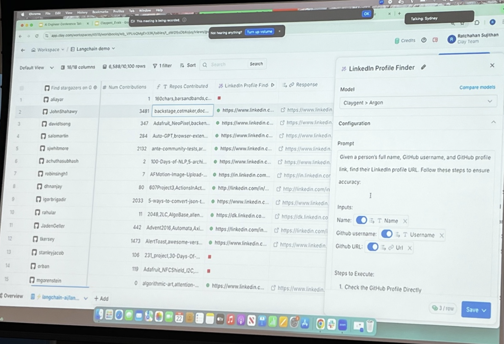
My Notes
"Given a person's full name, GitHub username, and GitHub profile link, find their LinkedIn profile URL. Follow these steps to ensure accuracy:"
- use "stargazers" on github integration
- put langchain github url in there
- get back stargazers in a spareadsheet
- extract usernames and github urla
- use github integration to get names and contributions and number of repos they created
- i'm a recruiter to find out about them and find their backgrounds
- there's a linkedin profile finder
- now you can extract person from linkedin profile
- now you have country profile, email
- write personalized messages to them
- very small snapshot of what clay can do
AI Notes
Logs to Action
Evals: Steering AI Strategy Pic 13
- Evals: Steering AI Strategy
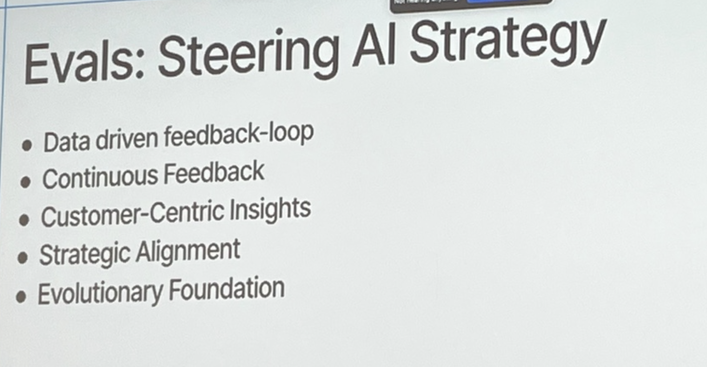
Core Elements of Our Evaluation Framework Pic 14
- Pic 14
AI Notes
Evals at Clay - Evaluation Pipeline Overview Pic 15
- Pic
My Notes
AI Notes
- Production / Observability Evals
- Tools Used:
- Twilio/Segment - a Customer Data Platform
- LangSmith
- Process: (top half)
- Logs are collected and processed in LangSmith and Twilio/Segment
- Structured events analyzed (Eval_IDs assigned)
- Pattern analysis and broader insights derived from multiple evaluations
- Insights linked to Linear for tracking action items
- Tools Used:
- Development Evals
- Production / Observability Evals
Development Evals – Ensuring Quality & Stability Pic 16
- Pic 16
AI Notes
"Claygent" Blackbox E2E Smoke Test CI Workflow Pic 17
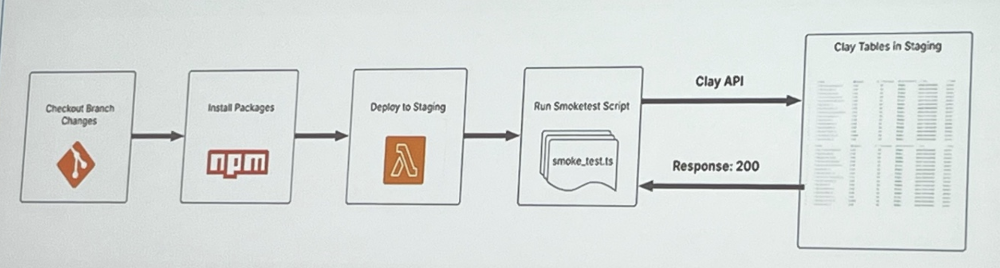
AI Notes
Claygent Blackbox E2E Smoke Test: Sample Staging Clay Table Pic 18
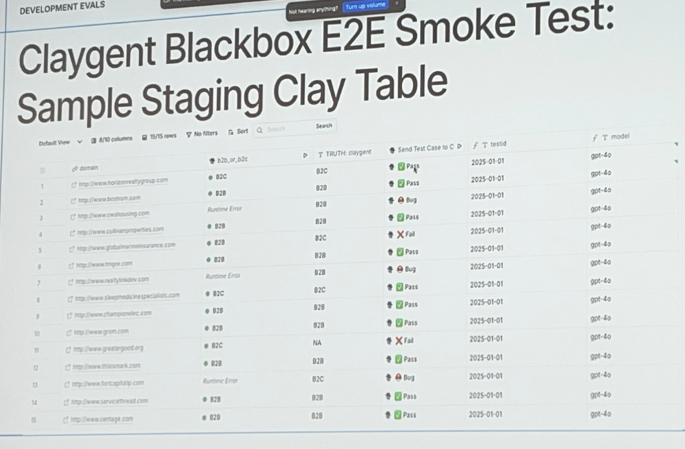
My Notes
AI Notes
- Table Overview:
- Columns:
- Example Entries:
horizonvalleygroup.com→B2C→Pass→gpt-4obostrom.com→B2B→Pass→gpt-4oowshousing.com→B2B→Bug→gpt-4oculinaryproperties.com→B2B→Pass→gpt-4oglobalmarininsurance.com→B2B→Fail→gpt-4ogreatgood.org→B2C→Pass→gpt-4ofortcapitalp.com→B2B→Bug→gpt-4oservicethread.com→B2B→Pass→gpt-4o
- Key Status Indicators:
- Table Overview:
Claygent Integration Testing: Types of Evals Pic 19
- Pic 19
AI Notes
- Key Points:
- Check your agent’s performance in development to ensure high-quality output in production.
- Comparing Agent Output to Ground Truth.
- Comparison Methods – The Langchain Openevals Framework Approach:
- Key Points:
Claygent Integration Test Example 1 Pic 20
- Pic 20
AI Notes
- Exact Matching
- Code Example (JavaScript)
- Test Definitionjavascript
ls.test( 'horizonrealtygroup', { inputs: { mission: createTestActionInputs('http://www.horizonrealtygroup.com').mission, }, referenceOutputs: { answer: 'B2C', }, } ); - Execute Testjavascript
async ({ referenceOutputs }) => { // call claygent action code const actionInputs = createTestActionInputs('http://www.horizonrealtygroup.com'); const response = await runClaygentActionCode(actionInputs, testContext); ls.logOutputs({ response: response.data.result }); - Assert Exact Matchjavascript
const exactMatchResult = await exactMatch({ outputs: response.data.result, referenceOutputs: referenceOutputs?.answer, }); expect(exactMatchResult.score).toBe(true); }
- Test Definition
LangSmith Debugging: Inspecting Model Discrepancies Pic 21
Transcript
We can use the C bucket, we can pass, array, but in our Ideal Candidate bucket, oh no, meta failed, but OpenAI passed. So we can use LightSmith to actually go and inspect why. Cool, and so this is the Datasets and Experiments page on LightSmith. I see my two buckets here. Let's click into Ideal Candidate, and then we'll click on our latest run. And lo and behold, we have our error here. If I click on this, I can see what the inputs and the reference outputs were. So I can see that the input was, give me an Ideal Candidate for the job at this particular link, at company meta. And then we see our reference output here, which seems to be about some iOS job. And then we can see that the error was thrown. Now what we can do is take a look at the thought process of the judge. We can see that our input was, give me the Ideal Candidate for this profile. It seems that they should scrape this job and add something to Mechanical Engineering. And our reference output is an iOS job. So let's read what the judge had to say. Upon analyzing what the reference and model outputs under the given rubric, it is evident that they describe candidates for entirely different roles. Amazing.
AI Notes
Observability Evals – Real-Time Insights & Optimization Pic 22
- Pic 22
AI Notes
Extracting Value from Customer Usage Data
Transcript
the actual sort of value comes from looking at how customers are using your platform. And depending on how these logs, you know, depending on whether your agent did well or poorly on a certain log, you can extract these for trading or debt deals. So upon classification, I'll sort of talk about the clustering and tagging technique.
AI Notes
Prompt Classification - Clustering & Tagging Pic 23
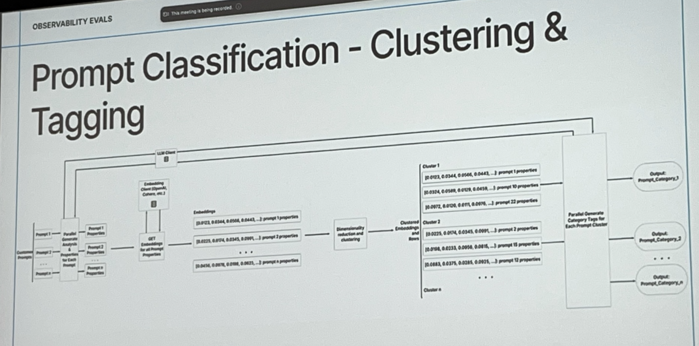
AI Notes
Prompt Classification - Claygent Categories Pic 24, Pic 25
Transcript
and tell me whether or not. And so whether or not probably implies a true or false value. Cool. So now let's dig into sort of real-time agent performance analysis. So like I said before, live data is the best data. And what you really want to do here is take in your incoming stream of data, take a subset of it, and analyze that to determine how your agent is doing. And so when you have examples of your agent doing a really good job, that can make excellent training data. You can export that in LightSmith, and we'll see that in the slides here, and then use that to train components of your agent. And the examples, when you have examples of logs where your agent can improve, it's probably best for you then to move that over to your development email set. So this kind of showcases the loop that I'm talking about between your production emails, your observability emails, and your development emails.
Pics
AI Notes
Realtime Agent Performance Analysis Example Pic 26, Pic 27
Transcript
Here are the parameters we gave to the judge to run on this 10% sample. Here we're giving it a model of GCC 4.0, and we're using one of the default language prompts that they provide. You are a teacher taking a quiz, you'll be given a question, a student answer, etc., etc. And then we're setting the answer to be the output response object from the plagiate, and the mission to be the input.mission from the plagiate.
- #### Pics
- AI Notes
LLM as a Judge - Example Evaluation Pic 28
pics
- AI Notes
- Input:
- Answer:
valid - Mission:
- Context: Validate if a given website landing page is operational.
- Objective: Determine if the landing page at
kw-platinum.comis connected. - Instructions:
Visit the website provided in the
kw-platinum.comcolumn.Check the landing page for indications that it is associated with a business.
If the page appears to be improperly set up (e.g., showing a generic hosting page like
wix.comdefault), mark it as'broken'.If the page loads correctly and is associated with a company, mark it as
'valid'.Return only
'broken'or'valid'based on the page status.Do not include any additional commentary or information in the response.
- Examples:
- Answer:
- Output Evaluation:
- Input:
Realtime Agent Performance Analysis Example Pic 29
Pic 29
AI Notes
Conclusion Pic 30
Pic 30
AI Notes
- Closing Thoughts
- Our Evals framework is our strategic compass, aligning innovation with the real needs of our users.
- It transforms raw data into meaningful insights that drive informed, agile decision-making.
- Merging development and observability creates a self-sustaining loop of continuous validation and enhancement.
- Every new feature marks a step forward in our journey toward a more resilient and adaptable system.
- Have the confidence that every decision you make is impacting the user!
- Closing Thoughts
- meta info